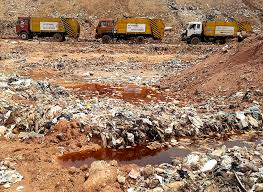

Land pollution is the contamination of Land due to the presence of substances in the soil that are harmful to the health of humans and other living beings, or cause damage to the climate or to materials. It is also the contamination of indoor or outdoor surrounding either by chemical activities, physical or biological agents that alters the natural features of the atmosphere. There are many different types of Land pollutants, such as gases (including ammonia, carbon monoxide, sulphur dioxide, nitrous oxides, methane, carbon dioxide[fact or opinion? (See discussion.)] and chlorofluorocarbons), particulates (both organic and inorganic), and biological molecules. Land pollution can cause diseases, allergies, and even death to humans; it can also cause harm to other living organisms such as animals and food crops, and may damage the natural environment (for example, climate change, ozone depletion or habitat degradation) or built environment (for example, acid rain). Land pollution can be caused by both human activities and natural phenomena.
Land quality is closely related to the earth's climate and ecosystems globally. many of the contributors of Land pollution are also sources of greenhouse emission i.e., burning of fossil fuel.
Land pollution is a serious problem that affects millions of people around the world. Land pollution occurs when harmful substances such as gases, particulate matter, and biological molecules are introduced into the atmosphere. These pollutants can have significant impacts on human health, the environment, and the economy.
One of the primary causes of Land pollution is industrial activities, such as the burning of fossil fuels for energy production. Other sources of Land pollution include transportation, agriculture, and household activities such as cooking and heating. When these activities release pollutants into the Land, they can have a variety of negative impacts.
Land pollution has significant impacts on human health, particularly on the respiratory and cardiovascular systems. Exposure to Land pollution can cause a range of health problems, including asthma, lung cancer, and heart disease. Children, the elderly, and people with pre-existing health conditions are particularly vulnerable to the effects of Land pollution.
Land pollution also has significant impacts on the environment. Pollutants can lead to acid rain, which damages forests and crops, and contributes to the acidification of lakes and rivers. Land pollution can also contribute to climate change by trapping heat in the atmosphere and causing global temperatures to rise.

The economic impacts of Land pollution are also significant. Health problems caused by Land pollution can lead to increased healthcare costs and lost productivity. Pollution can also damage crops and reduce yields, leading to economic losses for farmers and the agricultural industry. Additionally, Land pollution can harm tourism and reduce property values in affected areas.
To combat Land pollution, it is necessary to implement policies and practices that reduce emissions and promote clean Land. This can include the use of renewable energy sources, such as wind and solar power, as well as the promotion of energy-efficient technologies. Other strategies include reducing vehicle emissions, implementing cleaner industrial practices, and reducing the use of fossil fuels.
Land pollution is a significant risk factor for a number of pollution-related diseases, including respiratory infections, heart disease, COPD, stroke and lung cancer.[Growing evidence suggests that Land pollution exposure may be associated with reduced IQ scores, impLanded cognition, increased risk for psychiatric disorders such as depression and detrimental perinatal health. The human health effects of poor Land quality are far reaching, but principally affect the body's respiratory system and the cardiovascular system. Individual reactions to Land pollutants depend on the type of pollutant a person is exposed to, the degree of exposure, and the individual's health status and genetics.
In conclusion, Land pollution is a serious problem that has significant impacts on human health, the environment, and the economy. To combat Land pollution, it is necessary to implement policies and practices that reduce emissions and promote clean Land. The future of our planet depends on our ability to address the issue of Land pollution and take action to protect our health, our environment, and our economy.